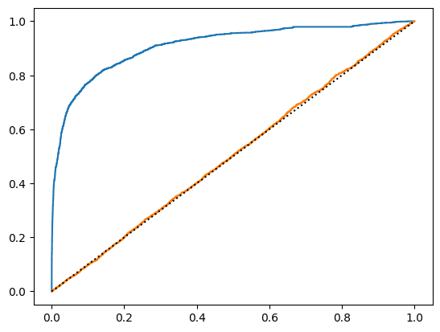

Packages#
import numpy as np
import pandas as pd
import torch
import torch.nn as nn
import torch.optim as optim
import matplotlib.pyplot as plt
from sklearn import metrics
from sklearn.utils.class_weight import compute_class_weight
from torch.utils.data import Dataset, DataLoader, WeightedRandomSampler
from tqdm.notebook import tqdm, trange
device = torch.device('cuda' if torch.cuda.is_available() else 'cpu')
device
device(type='cpu')
Data Loading#
training_data = pd.read_csv(
'https://www.dropbox.com/s/z32q8nks8iqkiuv/waterDataTraining.csv?dl=1',
index_col=0)
testing_data = pd.read_csv(
'https://www.dropbox.com/s/3ptrkyisyks2us3/waterDataTesting.csv?dl=1',
index_col=0)
val_idx = round(training_data.shape[0]/2)
train_data = training_data[:val_idx]
val_data = training_data[val_idx:]
Exploratory Data Analysis#
# Perform any EDA here
Data Processing#
window_trend = 24 * 60 # 1 day (24 hours x 60 minutes)
def preprocess_data(data, means=None, stds=None):
X = data.iloc[:,1:-1]
missing_data = 1.0 * (X.isna().sum(axis=1) > 0)
X = X.bfill()
y = data['EVENT']
X_trend = X.rolling(window_trend, min_periods=1).mean()
X -= X_trend
if means is None:
means = X.mean()
if stds is None:
stds = X.std()
X_detrended = (X - means)/stds
X_detrended['missing'] = missing_data
X['missing'] = missing_data
return torch.tensor(X_detrended.values).to(device), torch.tensor(X.values).to(device), torch.tensor(y.values, dtype=torch.double).to(device), means, stds
X_train, X_train_orig, y_train, means, stds = preprocess_data(train_data)
X_val, X_val_orig, y_val, _, _ = preprocess_data(val_data, means=means, stds=stds)
X_test, X_test_orig, y_test, _, _ = preprocess_data(testing_data, means=means, stds=stds)
Modeling#
Pytorch Dataset and Dataloader#
class TimeseriesDataset(Dataset):
def __init__(self, X, y, seq_len=1):
self.X = X
self.y = y
self.seq_len = seq_len
def __len__(self):
return self.X.__len__() - (self.seq_len-1)
def __getitem__(self, index):
return (self.X[index:index+self.seq_len].T, self.y[index+self.seq_len-1])
window = 30
weights = torch.FloatTensor([1, 1/y_train.mean()]).to(device)
samples_weight = torch.Tensor([weights[int(t)] for t in y_train[window-1:]])
sampler = WeightedRandomSampler(samples_weight, len(samples_weight))
batch_size = 128
train_dataset = TimeseriesDataset(X_train, y_train, seq_len=window)
train_loader = torch.utils.data.DataLoader(train_dataset, batch_size=batch_size, sampler=sampler)
train_val_dataset = TimeseriesDataset(X_train, y_train, seq_len=window)
train_val_loader = DataLoader(train_val_dataset, batch_size=batch_size, shuffle=False)
val_dataset = TimeseriesDataset(X_val, y_val, seq_len=window)
val_loader = DataLoader(val_dataset, batch_size=batch_size, shuffle=False)
test_dataset = TimeseriesDataset(X_test, y_test, seq_len=window)
test_loader = DataLoader(test_dataset, batch_size=batch_size, shuffle=False)
ANN Models#
class DeepNet(torch.nn.Module):
def __init__(self, window=30, n_hidden_layers=6, hidden_layer_dim=128,
kernel_size=3, use_batch_norm=True):
super(DeepNet, self).__init__()
self.convs = [torch.nn.Conv1d(10, hidden_layer_dim, kernel_size)]
for _ in range(n_hidden_layers):
self.convs.append(
torch.nn.Conv1d(hidden_layer_dim, hidden_layer_dim, kernel_size)
)
self.convs = torch.nn.ModuleList(self.convs)
self.batch_norms = torch.nn.ModuleList([
torch.nn.BatchNorm1d(hidden_layer_dim)
if use_batch_norm else None
for _ in range(n_hidden_layers + 1)
])
pool_size = window - len(self.convs)*(kernel_size - 1)
self.pool = torch.nn.AvgPool1d(pool_size)
self.fc1 = torch.nn.Linear(hidden_layer_dim, hidden_layer_dim)
self.fc2 = torch.nn.Linear(hidden_layer_dim, 1)
def forward(self, x):
for conv, bn in zip(self.convs, self.batch_norms):
x = conv(x)
if bn is not None:
x = bn(x)
x = torch.relu(x)
x = self.pool(x)
x = torch.flatten(x, 1)
x = self.fc1(x)
feat = torch.relu(x)
x = self.fc2(feat)
return x, feat
Training and evaluation functions#
def train(model, loader, criterion, optimizer):
model.train()
running_loss = 0.0
for i, data in enumerate(loader):
input, label = data
optimizer.zero_grad()
output, _ = model(input)
loss = criterion(output.flatten(), label)
loss.backward()
optimizer.step()
running_loss += loss.item()
return running_loss / len(loader)
def validate(model, loader, criterion):
model.eval()
running_loss = 0.0
with torch.no_grad():
for i, data in enumerate(loader):
inputs, labels = data
outputs, _ = model(inputs)
loss = criterion(outputs.flatten(), labels)
running_loss += loss.item()
return running_loss / len(loader)
model = DeepNet(window).double().to(device)
train_criterion = torch.nn.BCEWithLogitsLoss()
val_criterion = torch.nn.BCEWithLogitsLoss()
optimizer = torch.optim.SGD(model.parameters(), lr=0.005, momentum=0.9)
epochs = 1
train_epoch_loss = []
val_epoch_loss = []
for epoch in tqdm(range(epochs)):
train_loss = train(model, train_loader, train_criterion, optimizer)
val_loss = validate(model, val_loader, val_criterion)
train_epoch_loss.append(train_loss)
val_epoch_loss.append(val_loss)
plt.plot(train_epoch_loss)
plt.plot(val_epoch_loss)
plt.xlabel('epoch')
plt.ylabel('BCELoss')
plt.show()
Model Evaluation#
def compute_outputs_and_features(model, data_loader):
model.eval()
all_outputs = []
all_features = []
for i, data in enumerate(data_loader):
inputs, _ = data
with torch.no_grad():
outputs, features = model(inputs)
outputs = torch.sigmoid(outputs)
all_outputs.append(outputs.flatten())
all_features.append(features)
y_pred = torch.cat(all_outputs).cpu().numpy()
feat = torch.cat(all_features).cpu().numpy()
return y_pred, feat
y_train_pred, feat_train = compute_outputs_and_features(model, train_val_loader)
y_val_pred, feat_val = compute_outputs_and_features(model, val_loader)
y_test_pred, feat_test = compute_outputs_and_features(model, test_loader)
th = 0.5
print(metrics.classification_report(y_train[window-1:].cpu() > th, y_train_pred > th))
precision recall f1-score support
False 1.00 0.93 0.96 4827
True 0.29 1.00 0.45 144
accuracy 0.93 4971
macro avg 0.64 0.96 0.70 4971
weighted avg 0.98 0.93 0.95 4971
th = 0.5
print(metrics.classification_report(y_val[window-1:].cpu() > th, y_val_pred > th))
precision recall f1-score support
False 0.99 0.97 0.98 4884
True 0.21 0.51 0.30 87
accuracy 0.96 4971
macro avg 0.60 0.74 0.64 4971
weighted avg 0.98 0.96 0.97 4971
th = 0.05
print(metrics.classification_report(y_test[window-1:].cpu() > th, y_test_pred > th))
precision recall f1-score support
False 1.00 0.70 0.83 137208
True 0.05 0.91 0.09 2329
accuracy 0.71 139537
macro avg 0.52 0.81 0.46 139537
weighted avg 0.98 0.71 0.81 139537
fpr, tpr, th = metrics.roc_curve(y_test[window-1:].cpu(), y_test_pred)
plt.plot(fpr, tpr)
fpr, tpr, th = metrics.roc_curve(y_test[window-1:].cpu(), torch.rand(y_test_pred.shape))
plt.plot(fpr, tpr)
plt.plot([0,1], [0,1], ':k')
plt.show()
